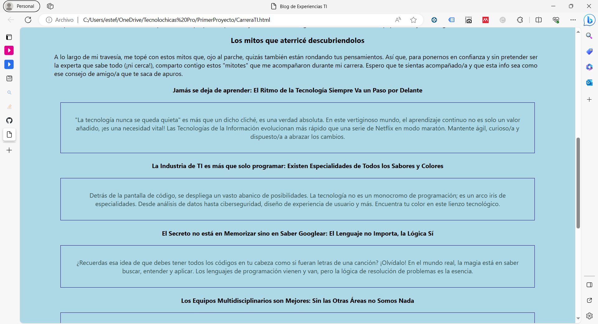
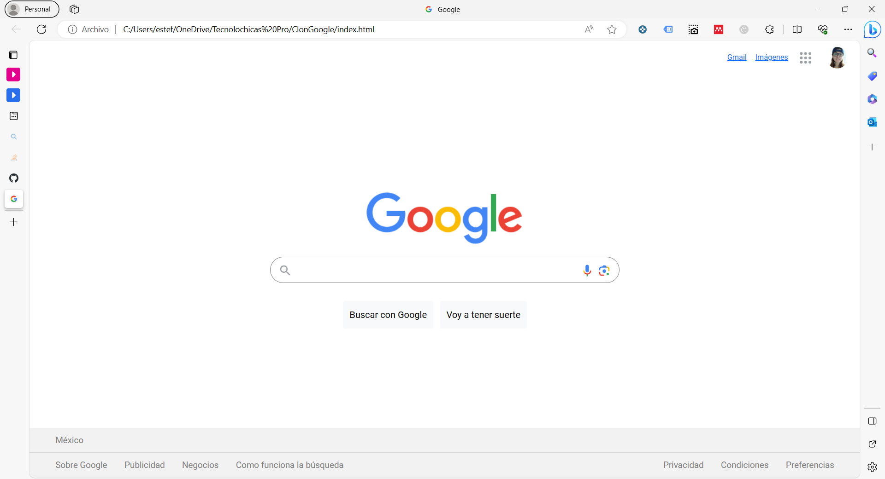
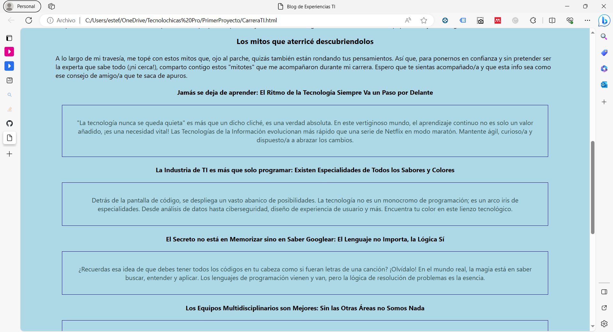
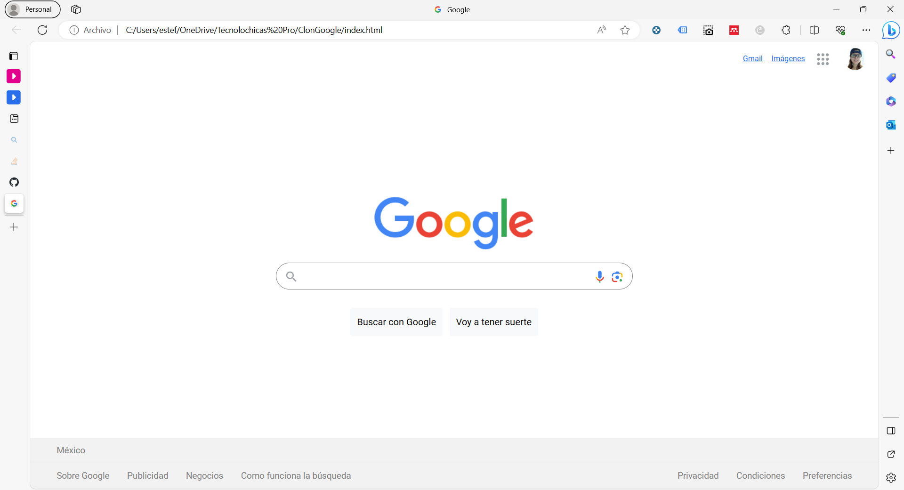

"La información es poder solo si puede tomar medidas con ella. Entonces, y solo entonces, representa el conocimiento y, en consecuencia, el poder."

Estefania Estrada
Apasionada de la Tecnología y Amante de los Datos
Educación
Recién graduada en Ingeniería en Sistemas Computacionales con especialización en Inteligencia de Negocios (BI) por el Instituto Tecnológico Superior de Teziutlán (ITST). Complementé mi formación con participación en diversos programas de capacitación, abordando áreas como Desarrollo Web, Ciencia de Datos, Nube, entre otros.
Experiencia
Mi experiencia profesional incluye una residencia profesional de 4 meses en EIGOCORP en el área de Desarrollo Low Code, seguida de una reubicación al área de Inteligencia de Negocios durante 8 meses. Actualmente, mantengo un contrato como Desarrollador y Consultor BI en EIGOCORP. Además, he participado en hackatones, contribuyendo al desarrollo de proyectos de manera independiente.
Voluntariado
Soy co-fundadora de "X-Women", una comunidad de mujeres para mujeres en el campo de la tecnología, así como de "Raccoons Club", una comunidad tecnológica para alumnos en el Instituto Tecnológico Superior de Teziutlán (ITST). También, fui Microsoft Learn Student Ambassador e IBM Student Advocate en el pasado. En la actualidad, soy miembro activo de la comunidad "Tecnolochicas".
Servicios y Habilidades BI
Habilidades en Inteligencia de Negocios y Análisis de Datos
Como profesional en el campo de la Inteligencia de Negocios (BI) y el Análisis de Datos, cuento con un conjunto de habilidades fundamentales que respaldan mi capacidad para abordar de manera efectiva los desafíos en este campo.
Ver ProyectosDiseño y Desarrollo de Base de Datos (BD)
Capacidad de diseñar y desarrollar bases de datos eficientes, garantizando la integridad y disponibilidad de los datos necesarios para la toma de decisiones.
Proceso de ETL y Modelos Analíticos
Estoy familiarizada con el proceso de Extracción, Transformación y Carga (ETL) de datos, así como con la creación de modelos analíticos para extraer información valiosa a partir de datos crudos.
Transformación y Limpieza de Datos
La transformación y limpieza de datos son componentes clave de mi conjunto de habilidades. Esta capacidad asegura que los datos sean precisos y útiles para su análisis.
Modelado Estrella y Visualización de Datos
Mi experiencia en modelado estrella y visualización de datos garantiza que los datos se presenten de manera efectiva, facilitando la comprensión y la toma de decisiones.
Servicios y Habilidades FrontEnd
Habilidades Adquiridas en Tecnolochicas PRO: Desarrollo Web
A pesar de tener una experiencia limitada en el ámbito del desarrollo web y diseño, he adquirido valiosas habilidades a través de mi participación en el bootcamp de Tecnolochicas PRO. Mi conjunto de habilidades en este campo incluye.
Ver ProyectosDiseño Web
He adquirido conocimientos en la creación de interfaces atractivas y funcionales para sitios web, asegurando una experiencia de usuario positiva.
Maquetación Web
Poseo habilidades en la maquetación de sitios web, traduciendo diseños en código HTML y CSS para su implementación efectiva.
Desarrollo de sitios Web
Aunque con experiencia limitada, he aprendido a desarrollar sitios web utilizando tecnologías frontend, garantizando su funcionamiento óptimo.
Diseño Web Responsivo
Comprendo la importancia de diseñar sitios web responsivos que se adapten a diferentes dispositivos y resoluciones, mejorando la accesibilidad y usabilidad.
Proyectos
Análisis de Datos

Dashboard Monitoreo de ATMs
Hack BBVA 2022 - Google Data Studio (Looker)
Las altas demandas de los ATMs en diversas ubicaciones han causado fallos y largos tiempos de espera que impactan la usabilidad. Para abordar este problema, desarrollé un Dashboard corporativo que ofrece información esencial sobre los ATMs.
This is a wider card with supporting text below as a natural lead-in to
additional content. This content is a little bit longer.
This is a wider card with supporting text below as a natural lead-in to
additional content. This content is a little bit longer.
Desarrollo Web: Frontend

Mi primer página web: Entrada de Blog
Proyetco tecnolochicas - HTML y CSS
Creación de mi primera página web exclusivamente con HTML, abordando los fundamentos esenciales de desarrollo web para diseñar una página sencilla y estática, marcando mi inicio en la programación web.

Clon de Google
Proyecto Tecnolochicas - HTML, CSS, Responsive
TDesarrollo de un clon de Google mediante el uso de HTML y CSS, ofreciendo una interfaz web similar a la conocida plataforma de búsqueda, con énfasis en la estructura y diseño visual para brindar una experiencia familiar a los usuarios.

Pokédex
Proyecto Launch X - HTML, CSS, JS
Desarrollo de una Pokédex utilizando HTML, CSS y JavaScript, enfocada en proporcionar información visual sobre Pokémon a través de imágenes. Aunque no es responsive, esta aplicación ofrece una visión básica de la información sobre los Pokémon.
Dashboard Monitoreo de ATMs
Hack BBVA 2022 - Google Data Studio (Looker)
Las altas demandas de los ATMs en diversas ubicaciones han causado fallos y largos tiempos de espera que impactan la usabilidad. Para abordar este problema, desarrollé un Dashboard corporativo que ofrece información esencial sobre los ATMs.
This is a wider card with supporting text below as a natural lead-in to additional content. This content is a little bit longer.
This is a wider card with supporting text below as a natural lead-in to additional content. This content is a little bit longer.

Mi primer página web: Entrada de Blog
Proyetco tecnolochicas - HTML y CSS
Creación de mi primera página web exclusivamente con HTML, abordando los fundamentos esenciales de desarrollo web para diseñar una página sencilla y estática, marcando mi inicio en la programación web.

Clon de Google
Proyecto Tecnolochicas - HTML, CSS, Responsive
TDesarrollo de un clon de Google mediante el uso de HTML y CSS, ofreciendo una interfaz web similar a la conocida plataforma de búsqueda, con énfasis en la estructura y diseño visual para brindar una experiencia familiar a los usuarios.
Pokédex
Proyecto Launch X - HTML, CSS, JS
Desarrollo de una Pokédex utilizando HTML, CSS y JavaScript, enfocada en proporcionar información visual sobre Pokémon a través de imágenes. Aunque no es responsive, esta aplicación ofrece una visión básica de la información sobre los Pokémon.
Testimonios
Ana Mota
Some representative placeholder content for the three columns of text below the carousel. This is the first column.
Teresa Carrillo
Another exciting bit of representative placeholder content. This time, we've moved on to the second column.